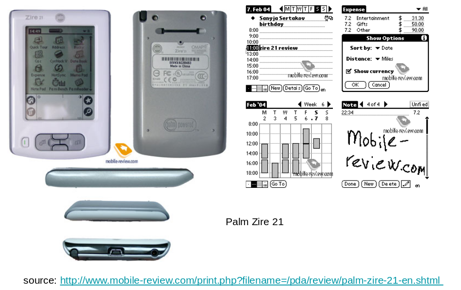
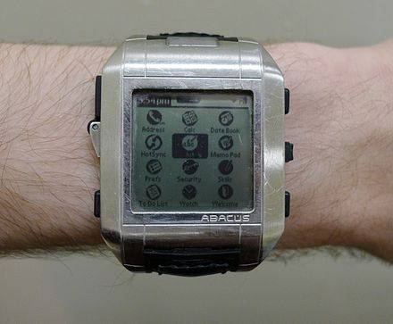
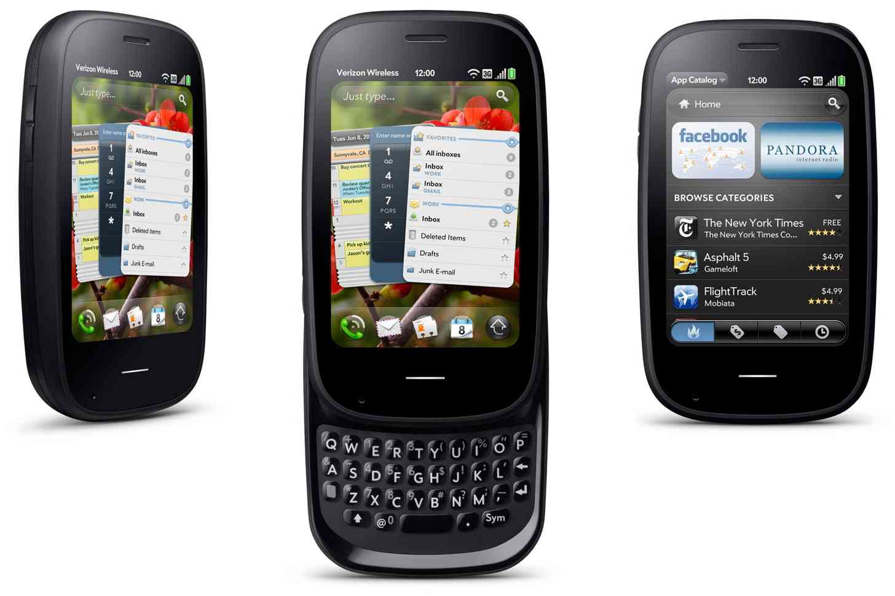
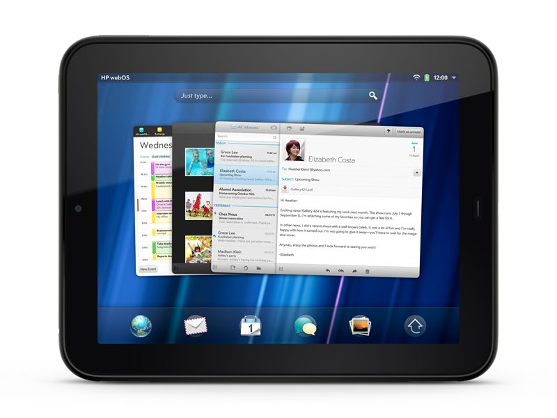
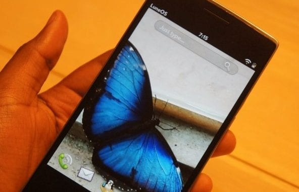
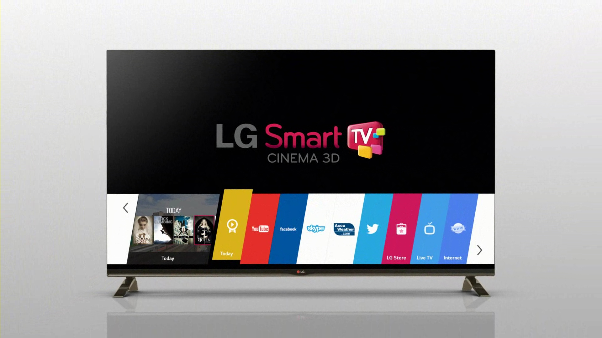

LG 在今年開源了 webOS OSE (webOS Open Source Edition), 這是一款類似 LG 用於 TV 上面的 webOS TV 系統，但是相對的缺少許多預建設的 app。
由於 webOS OSE 也是 Linux based 的系統，個人覺的有趣有打算拿來寫一系列的文章。
本文將粗略介紹 webOS 的歷史， 由於資料皆是網路上找來，並未受過嚴密的審查，請僅供參考就好 。
從 PDA 開始說起
在現代的智慧型手機崛起之前，商務人士中一定會攜帶的東西是 PDA (personal digital assistant), 中文名為 "個人行動助理"，和現代的智慧型手機很像，具有通訊錄、備忘錄、行程表、代辦事項等工具。
人們會透過觸控筆在電阻螢幕上書寫資訊，或是查看股市等應用，以 2004 年的 Palm Zire 21 來看，PDA 長成這樣 (Review Palm Zire 21)

甚至也有類似如今 Apple Watch 的手錶型 PDA Fossil Wrist 的出現，如下圖 (圖片來源)

後來 PDA 加入了電話功能後，開始出現了智慧型手機的雛型，當時知名的系統有以下這幾家: (不過現在都死的差不多了)
當然當時也有不少台灣廠商加入競爭，具體請參考: PDA OS 引發本土軟體業爭相投入，應用軟體沾光
iPhone 的出現
2007 年的 iPhone 發表會，宣告了一個新的時代的產生，也同時定義了「智慧型手機」，當然，如果你沒有看過 Steve Jobs 當時的發表會的話，建議看一下
這邊提及 iPhone 雖然有些離題，但是事實上 Palm 的 webOS 可以說是被 iOS 打敗而導致業務虧損，最後 Palm 被惠普 (HP) 買下。但好景不常，惠普 (HP) 出了幾款產品後 覺的無利可圖於是又把 webOS 賣給了 LG。
就讓我們真的進入 webOS 的故事吧:P
Palm
在個人行動助理 也就是 PDA (personal digital assistant) 還在盛行的時候，當時的領導公司就是 Palm ，為了和新興的智慧型手機對抗，Palm 推出了搭載 webOS 的 Palm Pre ，其長相如下 (圖片來源)

但由於諸多原因，Palm 失敗了，最後被惠普 (HP) 買了下來
HP
惠普 (HP) 買下了 Palm 以及 webOS 後，將其用於 HP TouchPad 上並發表了出來

但沒過多久，惠普 (HP) 就決定宣告放棄 webOS，並將其開源出來，此舉造成了 webOS-ports 社群的誕生
webOS Ports (LuneOS)
開源版本的 webOS 由 webOS-ports 社群維護，你可以在 https://github.com/webOS-ports 看到整個專案的程式碼，大約在 2016 年時候，webOS-ports 正式命名為 LuneOS 。(圖片來源)

LuneOS 有一點要特別題的是，在當時由於 libhybris 逐漸成熟，因此整個 LuneOS 專案也改用以 libhybris 作為 GPU 函式庫的設計，並使用 Wayland 來作為視窗管理系統。
註:
- libhybris 是一種可以讓你在 Linux 的 glibc 上觸摸到 Android bionic 上的函式庫的中介層函式庫，簡單點來說就是透過 dlopen() 搭配 hook() 的方式，讓 Linux 端可以重用 Android 端的相關函式庫，特別是 OpenGLES 函式庫。其原始作者為 Jolla 的工程師 Carsten Munk 。
- 筆者有幸在 libhybris 發展的過程中一窺 Ubuntu Touch、Mer、Salifish 等以 libhybris 為基底的系統的架構，但由於細講這一部份會偏離這一篇文章的主題，所以我們就到此為止吧 :)
LG
雖然惠普 (HP) 放棄了 webOS, 並將部份程式開源，但韓國的 LG 公司為了製作智慧電視，因此決定向惠普 (HP) 購買 webOS 的授權，用來製作在 LG 的電視上 (圖片來源)

這套系統目前已經在很多 LG 自己的智慧電視上面跑了，希望可以這樣持續下去